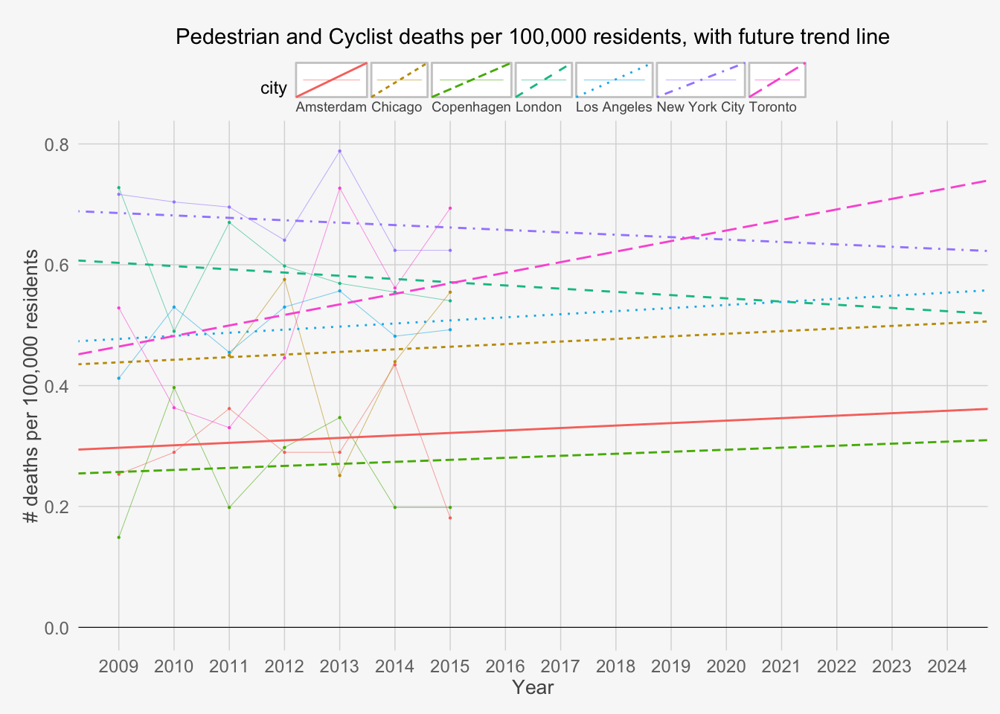

3 Results
The rate of pedestrian and cyclist fatalities per 100,000 residents are plotted in Figure 3.1.
Figure 3.1: The trend line for each city is fit to the raw values with a mean-squared error method
3.1 Trends

3.2 Direct Comparison: NYC and Toronto
95% confidence intervals have been added around the trend lines, enabling direct comparisons between cities.
In 2009, New York City had the greatest pedestrian and cyclist fatality rate among all cities included in the study. Toronto caught up to New York City in 2013, and by 2015 actually surpasses New York City in absolute terms - although this difference is not statistically significant.
If the trend lines are extended into the near future, we would expect to find that Toronto will become significantly more dangerous than New York City for pedestrians and cyclists. As New York City was previously the most dangerous, Toronto is therefore trending to become most dangerous among the 7 cities studied.
In the case of New York City, we see that Toronto begins comparatively safer but quickly catches up. Although Toronto was significantly safer in 2009, the difference between the two cities becomes non-significant by 2013, and by 2015 Toronto actually surpasses New York in absolute terms (although the difference is still not significant).
The 7-year trend for New York is negative, whereas the 7-year trend for Toronto is positive. If these trends are extended just 2 or 3 years into the future, then we would expect to find that Toronto has become significantly more dangerous than New York City.

3.3 Direct Comparison: Amsterdam and Toronto
Interestingly, in 2009 pedestrian and cyclist fatalities in Toronto were not significantly different from Amsterdam’s rates. However, by 2011 Toronto did have significantly more fatalities and the gap appears to be widening. In contrast, Amsterdam appears to have a relatively constant rate of pedestrian and cyclist fatalities per capita.